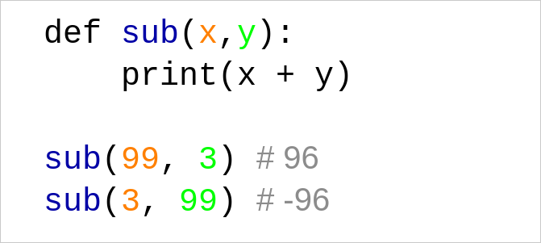

Keyboard shortcuts:
N/СпейсNext Slide
PPrevious Slide
OSlides Overview
ctrl+left clickZoom Element
If you want print version => add '
?print-pdf' at the end of slides URL (remove '#' fragment) and then print.
Like: https://wwwcourses.github.io/...CourseIntro.html?print-pdf
Created for

Iva E. Popova, 2022-2023,

What are Functions?
What are Functions?
- A function is a named block of statements and expressions (i.e. a sequence of instructions) which perform one conceptual task.
- A typical example for a function in the real life, is a recipe in a cooking book.
- The code in the function is executed only after the function is called.
- Functions help us to organize our code (break a task into sub-tasks)
def task_1():
pass
def task_2():
pass
...
def task_n():
pass
Function Definition
Function Definition
def function_name(param_list):
'''docstring'''
statements and expression
return [expression]
- def
- A keyword that starts the function definition
- function_name
- Should be valid identifier name, like variables names.
- param_list
- Optional. A list of function parameters. The braces around it are required, even if the list is empty.
- '''docstring'''
- Optional. A string for function documentation.
- statements and expression
- block of code, also called function body. Must have at least 1 line or the pass statement.
- return [expression]
- Optional. Specify what the return value of the function should be.
The pass statement
- Sometimes you need to define a function which body will be written later, but Python did not allows empty blocks!
- In such cases, you can use the
passstatement for function body:
def do_task1():
pass
def do_task2():
pass
def do_task3():
pass
You can use the pass statement anywhere in your code, where you need a "do nothing" block!
simplest example
def greet():
"""Just prints hello"""
print("Hello!")
- Note, this code will not print anything if you try to run it as is
- This is just the function's definition
- In order to execute the statements in it, the function should be called!
Function Call
Synonyms: Function Execution; Function Invocation
Function Call
- The code in the body of a function will be executed only when the function is called:
- opt_arg_list is optional, but braces are required
- Note, that the braces after the function name are present!
function_name(opt_arg_list)
### define greet() function
def greet():
"""Just prints hello"""
print("Hello!")
### execute the greet() function:
greet()
- A function must be defined before you call it, or a NameError will be raised!
- function call - the right way:
# execute the greet() function:
greet()
# define greet() function:
def greet():
print("Hello!")
# NameError: name 'greet' is not defined
# define greet() function:
def greet():
print("Hello!")
# execute the greet() function:
greet()
# Hello!
Function Parameters
Function Parameters
- A function is not very useful if it operates on same values
- It will be better if we could do:
def add():
print(2+3)
add()
add()
add()
# 5
# 5
# 5
# call add with different arguments:
add(20, 22)
add(123, 321)
add(16, 10)
# DESIRED OUTPUT:
# 42
# 444
# 26
- Parameters are local function variables which get values when the function is called with the respective arguments.
- You can define a function to use parameters by listing them in the braces.
- Parameters names should be valid variable names.
- When you call a function, you list in the braces the respective parameters values (called arguments)

Positional Arguments
- Passing arguments values to parameters can be done by position. In this case, we speak about positional arguments/parameters:
- first parameter gets the value of first argument
- second parameter - the value of second argument
- and so on... 
{kind=link}
Positional Arguments
- The number of arguments passed must be equal to the number of parameters!
def sub(x,y):
""" subtracts y from x and prints the result """
print(x - y)
sub(99)
# TypeError: sub() missing 1 required positional argument: 'y'
sub(99, 3, 3)
# TypeError: sub() takes 2 positional arguments but 3 were given
Default Parameters Values
- A default value to the "trailing" parameters can be defined, and that value will be used if no argument for that parameter is passed.
def greet(name="Nobody"):
""" greets a user """
print("Hello", name)
greet("Maria")
greet()
# Hello Maria
# Hello Nobody
Default Parameters Values
Default parameters must follow the non-default parameters!
def greet(msg="Hi", name):
print(f"{msg} {name}!")
greet("Maria")
# SyntaxError: non-default argument follows default argument
def greet(name, msg="Hi"):
print(f"{msg} {name}!")
greet("Maria")
# Hi Maria!
Keyword (named) Arguments
- If you explicitly state the parameter name in the argument list, that parameter will get its value, no matter of where it is positioned.
def greet(msg, name):
print(f"{msg} {name}!")
greet(name="Maria", msg="Hi")
Keyword (named) Arguments
Named arguments must follows the positional arguments!
def greet(msg, name):
print(f"{msg} {name}!")
greet(name="Maria", "Hi")
# SyntaxError: positional argument follows keyword argument
Variable Number of Positional Arguments (*args)
- You can define a function to take variable number of arguments if you use the * (star) operator in front a parameter name.
- Thus, the parameter will receive the arguments packed in a tuple:
def foo(*args):
print(args)
foo(1)
foo(1,2)
foo(1,2,3)
#(1,)
#(1, 2)
#(1, 2, 3)
The name args can be any valid variable name, but its a convention to use *args to denote that it contains the packed arguments
Variable Number of Positional Arguments (*args)
Variable arguments must follow the positional arguments:
def add(p1, *args):
print(p1, end=", ")
print(args)
add(1, 2)
add(1, 2, 3)
add(1, 2, 3, 4)
# 1, (2,)
# 1, (2, 3)
# 1, (2, 3, 4)
Variable Number of Positional Arguments (*args) - Task
- Define the
add_num()function, which will print the sum of variable number of numerical arguments
# add_num() definition
# test your code:
add_num(1)
#should print 1
add_num(1,2)
#should print 3
add_num(1,2,3)
#should print 6
Variable Number of Keyword Arguments (**kwargs)
- You can use
**(double stars) in front of parameter name which will receive a variable number of keyword arguments packed into a dictionary.
def foo(**kwargs):
print(kwargs)
foo(a=1, b=2)
# {'a': 1, 'b': 2}
Variable Number of Keyword Arguments (**kwargs) - example
def signup(**kwargs):
for k,v in kwargs.items():
print("{} - {}".format(k,v))
signup(user="ada", age=28)
signup(user="ada", age=28, town="london")
Unpacking sequence into positional parameters
- You can unpack a list/tuple passed as argument into listed positional parameters with the
*operator
def my_func(p1,p2,p3):
print(p1, p2, p3)
args = [1,2,3]
my_func(*args)
# 1 2 3
Note, that if you miss the star in my_func(*[1,2,3]), Python will assign the whole list [1,2,3] to p1, and the rest of parameters will receive no value. That will throw an error!
Unpacking dictionary into named arguments
- You can use
**(double stars) to unpack dictionary into named arguments.
def menu_print(fruit, price):
print("{:.<20s}{:.2f}".format(fruit,price))
menu_print(**{
"price": 2.5,
"fruit": "apple"
})
# apple...............2.50
Function Return Values
Function Return Values
return statement
- Functions in Python can return values, using the
returnstatement:
def f():
statements and expressions
return [expression]
def add(x,y):
return x+y
print(add(2,4)**2)
# 36
The return statement exit the function! Any code after return will never be executed:
def add(x,y):
return x+y
# next line will never be executed:
print("After return")
print(add(2,4))
Default return value
- If a function did not have an explicit
returnstatement, then the function return value is None.
def foo():
print("foo() was executed!")
def bar():
print("bar() was executed!")
return "End"
print( foo() )
print( bar() )
# OUTPUT:
# foo() was executed!
# None
# bar() was executed!
# End
In Python every function returns a value (as in math), being it None!
Scope and Namespaces
Scope and Namespaces
What?
- A namespace stores the mapping from names to objects stored in memory. Namespace usually is implemented internally by a dictionary.
- A scope is a lexical (textual) region of the program, where a namespace is directly accessible (i.e. without a prefix).
- You can think of the scope as part of your program where a variable can be accessed (used, visible).

Namespace example
from pprint import pprint
x = 1
def f1():
y = 2
print('f1 local namespace:')
pprint( locals() )
print()
def f2():
z = 2
print('f2 local namespace:')
pprint( locals() )
print()
f1()
f2()
print('global namespace:')
pprint( globals() )
print()
Local Scope
- Names created inside a function are local to the function and are visible only inside that function
- Function parameters are also defined in local function namespace. I.e. they are local to that function.
def f1():
y = 2
print(f"y = {y} inside f1")
f1()
# y = 2 inside f1
print(f"y = {y} outside f1")
# NameError: name 'y' is not defined
Global Scope
- A name defined outside any functions is global to the file/module, and can be accessed after its definition from any place in that file/module.
x = 10
def foo():
print("x = {} inside foo()".format(x))
foo()
# x = 10 inside foo()
print("x = {} outside foo()".format(x))
# x = 10 outside foo()
Names Resolution
- When a name is assigned a value inside function body, that name is created in function local scope (if the global keyword is not used), even if the same name is already defined in global scope
x = 1
def foo():
x = 99
print(f"x = {x} inside foo")
foo()
# x = 99 inside foo
print(f"x = {x} outside foo")
# x = 1 outside foo
Variables with same name, defined in different scopes are considered as different variables!
Names Resolution - nested functions
def outer():
x=2
def inner():
x = 3
print(f'x = {x} in inner')
inner()
print(f'x = {x} in outer')
x = 1
outer()
print(f'x = {x} in global')
#x = 3 in inner
#x = 2 in outer
#x = 1 in global
the nonlocal statement
- We can declare a name with the
nonlocalstatement prefix - The nonlocal statement causes the listed names to refer to previously bound variables in the nearest enclosing scope excluding globals.
def outer():
x=2
def inner():
nonlocal x
x = 3
print(f'x = {x} in inner')
inner()
print(f'x = {x} in outer')
x = 1
outer()
print(f'x = {x} in global')
#x = 3 in inner
#x = 3 in outer
#x = 1 in global
the global statement
- We can declare a name with the
globalstatement prefix - The
globalstatement causes the listed names to be interpreted as global names.
def outer():
x=2
def inner():
global x
x = 3
print(f'x = {x} in inner')
inner()
print(f'x = {x} in outer')
x = 1
outer()
print(f'x = {x} in global')
#x = 3 in inner
#x = 2 in outer
#x = 3 in global
Names Resolution - rules
Although scopes are determined statically, they are used dynamically. I.e. a name is resolved searching in:
- The local (innermost) scope
- The scopes of any enclosing functions, which are searched starting with the nearest enclosing scope, contains non-local, but also non-global names
- The current module’s global names
- The outermost scope is the namespace containing built-in names

First-class functions in Python
First-class functions in Python
Overview
- Functions in Python are First-class function, i.e:
- a function can be assigned to variable, or stored in other data structure (like list of functions)
- a function can be passed as argument to another function
- a function can be returned as value from another function
- Functions in Python are objects! Just like integers, strings, lists, ...
Example - a function can be assigned to variable
def greet(name):
print("Hello, {}".format(name))
#a function can be assigned to variable:
foo = greet
greet("Maria")
foo("Pesho")
#OUTPUT
# Hello, Maria
# Hello, Pesho
Example - a function can be passed as argument to another function
def greet(name):
print("Hello, {}".format(name))
# a function can be passed as argument to another function
def wrapper(f, n):
f(n)
wrapper(greet, "Alex")
#OUTPUT
# Hello, Alex
Example - a function can be returned as value from another function
#a function can be returned as value from another function
def greet_wrapper(name):
def wrapper():
print("Hello, {}".format(name))
return wrapper
greet = greet_wrapper("Viktor")
greet()
Lambda expressions
Lambda expressions
Overview
- Lambda expressions in Python are used to create short (one-line), anonymous functions.
- Lambda expressions creates a function that does not use
defandreturn. - The "body" of lambda can contain only single expression.
- They are generally used with reduce( ), filter( ), and maps() - as discussed further, or as arguments to other functions - typical for Functional Programming paradigm.
Syntax
Lambda functions are defined by:
lambda parameter_list: expression
which is equivalent to
def some_func(arguments):
return expression
but without a name
simple example
Note, that in bellow examples, lambda functions are assigned to variables, just to demonstrate the lambda syntax in simplest context. This is not Pythonic - lambdas should be used as anonymous functions. And we will see real lambda usage in next slides.
add = lambda x,y:x+y
print( add(2,3) )
maxnum = lambda x,y: x if x>y else y
print( maxnum(30,40) )
The filter() Function
The filter() Function
Syntax
filter(function, iterable)
- function - a function definition. Note, that you must not call the function!
- iterable - a sequence (list, tupple, range or string) or container which supports iteration, or an iterator.
- Function should return a Boolean value. It is called for each item in the sequence and if it returns False, the item will be filtered
Example: List of even numbers - without lambda
def is_even(x):
return True if x!=0 and x%2==0 else False
even_numbers = filter(is_even, range(10))
print( list(even_numbers) )
# [2, 4, 6, 8]
Example: List of even numbers - with lambda
even_numbers = filter(lambda x: x%2==0 if x!=0 else False, range(10))
print( list(even_numbers) )
Example: filter empty strings - with lambda
names = ["Ivan", "", "Alex", "", "Maria", "Angel", ""]
not_empty_names = filter(lambda s: s, names)
print( list(not_empty_names) )
Example: Names, starting with 'A' - with lambda
names = ["Ivan", "Alex", "Maria", "Angel", ""]
filtered_names = filter(lambda s: s and s[0]=="A", names)
print( list(filtered_names) )
The map() Function
The map() Function
Syntax
map(function, iterable, ...)
- function - a function definition. Note, that you must not call the function!
- iterable - a sequence (list, tupple, range or string) or container which supports iteration, or an iterator. Note, that you can pass multiple iterables!
- map() applies the function to all the elements of the iterable. And returns a new iterable with the elements changed by the function.
Example: numbers => squared numbers
map numbers in a list to a list of squared numbers:
numbers = [1,2,3,4,5]
sqr_numbers = map(lambda x:x**2, numbers)
print( list(sqr_numbers) )
#[1, 4, 9, 16, 25]
Example: Generate all uppercase cyrillic letters by their UTF codes
letters = map(chr, range(1040, 1072))
print( list(letters) )
#['А', 'Б', 'В', 'Г', 'Д', 'Е', 'Ж', 'З', 'И', 'Й', 'К', 'Л', 'М', 'Н', 'О', 'П', 'Р', 'С', 'Т', 'У', 'Ф', 'Х', 'Ц', 'Ч', 'Ш', 'Щ', 'Ъ', 'Ы', 'Ь', 'Э', 'Ю', 'Я']
Example: feed map() with multiple iterables
- If we pass to map N iterables, then it will feed the function with N arguments, each from the respective iterable.
l1 = [1,2,3]
l2 = [1,2,3]
l_sum = map(lambda a,b: a+b, l1, l2)
print( list(l_sum) )
# [2, 4, 6]
References
Videos
Python tutorial #7: Python Namespaces and Scope
References
- Defining Functions @python.org/3/tutoria
- Functions @python-course.eu
- Namespaces and Scope in Python @realpython
Exercises
Task1: BMI with functions
Task
- Write a program which will calculate a user BMI.
- Split your logic into functions, and organise your program as given bellow:
def get_user_data():
"""retrieves user data from the command line
Returns:
[dictionary] of the form:
{
"name" : "user_name",
"height": "user heigth in meters",
"weight": "user weight in kilograms"
}
"""
pass
def calc_BMI(w,h):
"""calculates the BMI
Arguments:
w {[float]} -- [weight]
h {[float]} -- [height]
Returns:
[float] -- [calculated BMI = w / (h*h)]
"""
pass
def calc_BMI_category(bmi):
"""Calculates the BMI category
Arguments:
bmi {[float]} -- [the bmi number index]
Returns:
[string] -- [bmi category]
"""
pass
def print_results(bmi_category):
"""[Prints the BMI category to the user ]
Arguments:
bmi_category {[string]} -- []
"""
pass
def cm_to_meters(cm):
"""converts centimetres to meters
Arguments:
cm {[int]}
Returns:
[float]
"""
pass
user_data = get_user_data()
bmi = calc_BMI(user_data["weight"],user_data["height"] )
bmi_category = calc_BMI_category(bmi)
print_results(bmi_category)
Task2: Check user input
- Improve the function
get_user_data()defined in Task1, adding a check for valid user data: - User name must be at least 2 characters long
- User's height must be in the range: [50 - 250]
- User's weight must be in the range: [5 - 300]
- If the user enters wrong data, ask for input again.
- Advanced task: define a separate function for each check (validate_name(), validate_height(), validate_weight()) which will return True if the user input is valid, and False - otherwise.